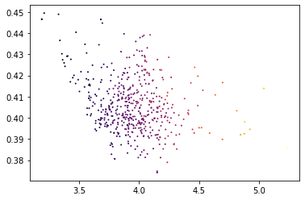

import magic
import pandas as pd
import matplotlib.pyplot as pltX = pd.read_csv("test_data.csv")
X.shape(500, 197)magic_operator = magic.MAGIC()
X_magic = magic_operator.fit_transform(X, genes=['VIM', 'CDH1', 'ZEB1'])
X_magic.shapeCalculating MAGIC...
Running MAGIC on 500 cells and 197 genes.
Calculating graph and diffusion operator...
Calculating PCA...
Calculated PCA in 0.02 seconds.
Calculating KNN search...
Calculated KNN search in 0.04 seconds.
Calculating affinities...
Calculated affinities in 0.03 seconds.
Calculated graph and diffusion operator in 0.09 seconds.
Calculating imputation...
Calculated MAGIC in 0.10 seconds.
(500, 3)magic_operator.set_params(t=7, a=15, k=5, knn_dist='euclidean', n_jobs=1, n_pca=100, random_state=None, verbose=1)
X_magic = magic_operator.transform(genes=['VIM', 'CDH1', 'ZEB1'])
X_magic.shapeRunning MAGIC on 500 cells and 197 genes.
Calculating graph and diffusion operator...
Calculating PCA...
Calculated PCA in 0.01 seconds.
Calculating KNN search...
Calculated KNN search in 0.03 seconds.
Calculating affinities...
Calculated affinities in 0.03 seconds.
Calculated graph and diffusion operator in 0.08 seconds.
Calculating imputation...
(500, 3)X_magic = magic_operator.transform(genes="all_genes")
X_magic.shapeCalculating imputation...
(500, 197)plt.scatter(X_magic['VIM'], X_magic['CDH1'],c=X_magic['ZEB1'], s=1, cmap='inferno')<matplotlib.collections.PathCollection at 0x7fc92b0eafa0>

png
References
1. Van Dijk D, Sharma R, Nainys J, Yim K, Kathail P, Carr AJ, et al. Recovering gene interactions from single-cell data using data diffusion. Cell. 2018;174:716–29.